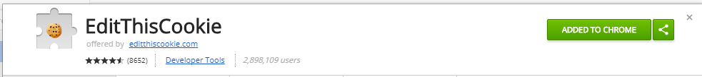
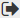
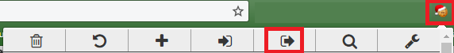

Because of limitations in the Youtube API, the only way to get all of the watch history is by scraping it manually, so this requires the "cookie" stored in your browser that allows you to access YouTube
To get the access key please download
EditThisCookie

Then go to
YouTube.com and click on the Edit This Cookie button in your top bar, and hit the  button.

This will copy the data to your clipboard, paste that into the box above.